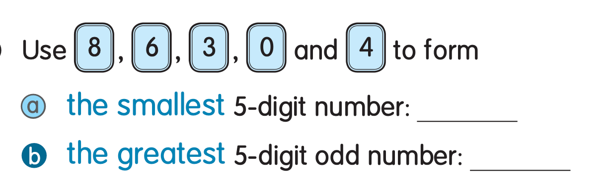
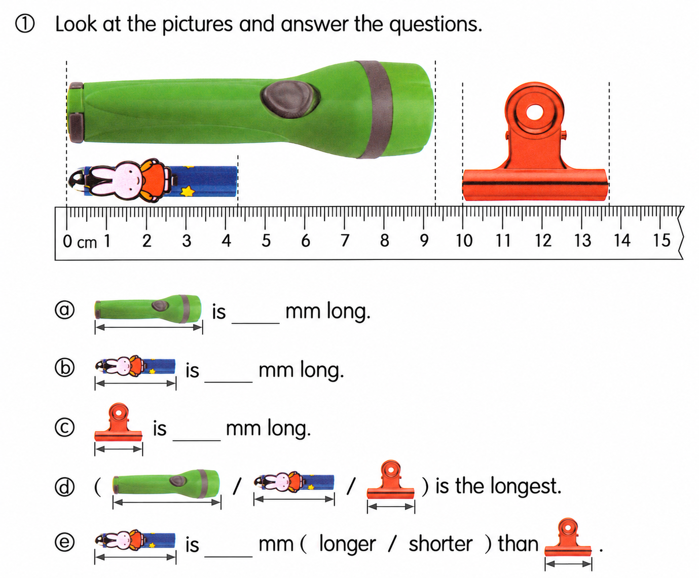

已掌握
| # | 中文意思 | 例句/提示 | 英文默写 | 已掌握 |
|---|---|---|---|---|
| noun 名词 | ||||
| 1 | 朋友 | My is kind. | ||
| 2 | 双胞胎 | My brother and I have the same birthday. | ||
| 3 | 森林 | Many animals live in the . | ||
| 4 | 肉类 | I eat for dinner. | ||
| 5 | 阅读 | helps me learn new things. | ||
| 6 | 科学 | We learn about plants in class. | ||
| 7 | 眼镜 | He wears . | ||
| verb 动词 | ||||
| 8 | 参观；登录 | I the museum with my class. | ||
| 9 | 定位 | We can the place on the map. | ||
| 10 | 感觉 | I happy today. | ||
| 11 | 选择 | I a book. | ||
| 12 | 带有/搬运 | I my bag. | ||
| phrase 短语 | ||||
| 13 | 摆餐具 | I before dinner. | ||
| noun phrase 名词短语 | ||||
| 14 | 礼堂 | We sing together in the . | ||
| adjective 形容词 | ||||
| 15 | 柔软的 | The fur is . | ||
| 16 | 口渴的 | I am after running. | ||
| 17 | 聪明的 | She is and kind. | ||
| 18 | 特别喜欢的 | My sport is basketball. | ||
| 19 | 困难 | This question is . | ||
| modal verb 情态动词 | ||||
| 20 | 禁止；不准 | You run in the classroom. | ||
| # | 单词/词组 | 中文意思 | 例句/说明 | 已掌握 |
|---|---|---|---|---|
| adjective 形容词 | ||||
| 1 | fantastic | The show was fantastic. | ||
| 2 | wise | The wise man gave good advice. | ||
| noun 名词 | ||||
| 3 | word | Please write fifty words. | ||
| 4 | Australia | Australia is a big country. | ||
| 5 | elf（复数：elves） | The elf has pointed ears. | ||
| 6 | principal | Our principal welcomed the new students. | ||
| 7 | pair | I need a pair of socks. | ||
| 8 | clinic | The doctor works in a clinic. | ||
| 9 | court | We play on the court. | ||
| 10 | clue | This clue helps me. | ||
| 11 | hotel | We stayed at a hotel. | ||
| noun phrase 名词短语 | ||||
| 12 | department store | We shop at the department store. | ||
| 13 | dim sum | We eat dim sum for lunch. | ||
| 14 | Parents' Day | Parents' Day is on 15th October. | ||
| 15 | a hamburger | How much is a hamburger? It's seventy dollars. | ||
| 16 | a spoon | Use a spoon to serve the soup. | ||
| 17 | a wallet | I gave him a wallet. | ||
| 18 | Computer Studies | Gopal is good at Computer Studies. | ||
| verb 动词 | ||||
| 19 | describe | I can describe the picture. | ||
| phrase 短语 | ||||
| 20 | hang up | Please hang up your coat. | ||
| 21 | make a mess | Please do not make a mess in the room. | ||
| 22 | look at | Please look at the picture. | ||
| 23 | Lamma Island | We took a ferry to Lamma Island. | ||
| verb phrase 动词短语 | ||||
| 24 | have a picnic | I want to go there because I want to have a picnic. | ||
| 25 | playing board games | We like playing board games. | ||
| 26 | doing puzzles | I like doing puzzles. | ||
| 27 | paint pictures | I like to paint pictures after school. | ||
| 28 | watch dragon boat races | We watch dragon boat races every year. | ||
| uncategorized 未分类 | ||||
| 29 | revise | I revise for my English test after school. | ||
| adverb 副词 | ||||
| 30 | accidentally | I accidentally dropped my pencil. | ||
| # | 中文意思 | 例句/提示 | 英文默写 | 已掌握 |
|---|---|---|---|---|
| time/date 时间日期 | ||||
| 1 | 二月 | is the second month. | ||
| 2 | 十一月 | is the eleventh month. | ||
| 3 | 十二月 | is the twelfth month. | ||
| time unit 时间单位 | ||||
| 4 | 时 | An has 60 minutes. | ||
| directions 方向 | ||||
| 5 | 南 | is a direction. | ||
| numbers 数字 | ||||
| 6 | 8 | is 8. | ||
| 7 | 10 | is 10. | ||
| 8 | 18 | is 18. | ||
| 9 | 70 | is 70. | ||
| solid shape 立体图形 | ||||
| 10 | 四棱柱 | A has quadrilateral faces. | ||
| 11 | 六棱柱 | A has hexagonal faces. | ||
| 12 | 圆锥 | A has one curved face. | ||
| 13 | 面 | A cube has six . | ||
| plane shape 平面图形 | ||||
| 14 | 三角形 | A has three sides. | ||
| geometry 几何 | ||||
| 15 | 邻边 | These are . | ||
| # | 单词/词组 | 中文意思 | 例句/说明 | 已掌握 |
|---|---|---|---|---|
| operations 运算 | ||||
| 1 | total | Find the total number of apples. | ||
| 2 | borrowing | Borrowing helps when we subtract. | ||
| geometry 几何 | ||||
| 3 | parallel | Parallel lines never meet. | ||
| directions 方向 | ||||
| 4 | direction | Direction tells us where to go. | ||
| question word 题目词 | ||||
| 5 | compare | We compare two numbers. | ||
| 6 | calculate | Calculate the answer. | ||
| shape 形状 | ||||
| 7 | circle | Draw a circle around the answer. | ||
| comparison 比较 | ||||
| 8 | fewer | There are fewer apples in this box. | ||
| 9 | fewest | Which group has the fewest? | ||
| 10 | lighter | A pencil is lighter than a brick. | ||
| 11 | heaviest | The 3 kg bag is the heaviest of the 1 kg, 2 kg and 3 kg bags. | ||
| time/date 时间日期 | ||||
| 12 | non-leap year | A non-leap year has 365 days. | ||
| 13 | hour hand | At three o'clock, the hour hand points to 3. | ||
| quantity 数量 | ||||
| 14 | pair | A pair means two things together. | ||
| position 位置 | ||||
| 15 | front | The door is at the front of the room. | ||
| 16 | back | The desk is at the back of the room. | ||
| 17 | above | The clock is above the board. | ||
| 18 | arrow | The arrow points to the right. | ||
| operations calculation 运算 | ||||
| 19 | A times B | A times B means multiplication. | ||
| 20 | multiplication | Multiplication can use times. | ||
| 21 | subtract A from B | "Subtract A from B" means B - A. | ||
| currency money 货币 | ||||
| 22 | cent | One cent is a small amount of money. | ||
| 23 | coin | The coin is round. | ||
| measurement 测量 | ||||
| 24 | centimetre | A centimetre is a small unit of length. | ||
| 25 | kilometer | One kilometer is 1,000 meters. | ||
| geometry tool 几何工具 | ||||
| 26 | set square | A set square helps us draw angles. | ||
| directions tool 方向工具 | ||||
| 27 | compass | A compass shows directions. | ||
| 句型结构 | ||||
| 28 | ... is to the north of ... | The playground is to the north of the hall. | ||
| plane shape 平面图形 | ||||
| 29 | trapezium | A trapezium has exactly one pair of parallel sides. | ||
| 30 | lower base | The lower base of this trapezium is 7 cm long. | ||




